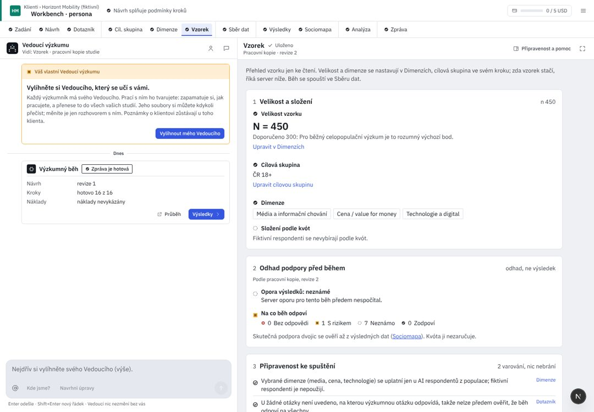

Klienti / Pivovar Zlatá Hora
Vnímání značek ležáků 2026
01
Velikost a složení
Velikost vzorkumeze 300–2 000 po 50 · doporučeno 500, aby mapa měla dost dat u všech dvojicStrop běhu při N {{n}}: {{cost}} (horní mez, ne odhad) · ve studii zbývá 38,80 USD
N {{n}}
Cílová skupinaPijáci ležáku 18–65 · 2 faktory
DimenzeVztah ke značkám, Nákupní chování, Cenová citlivost
Složení podle kvót · pohlaví × věk × kraj
| Skupina | Podíl | Respondentů |
|---|---|---|
| {{q.l}} | {{q.p}} | {{q.n}} |
Dalších 34 skupin. Kvóta říká, kolik lidí každé skupiny vytáhneme; neříká, že odpoví na každou otázku.
02
Kolik dat bude za čísly
odhad před během, ne výsledekMapa značek: {{fcText}}Dvojici značek mapa ukáže spolehlivě, když ji zná aspoň 30 lidí. Běh poběží i tak; slabé dvojice mapa označí.
Zodpověditelné otázky
18
Ohrožené
3
málo lidí zná značku
Nelze říct předem
1
otevřená otázka
03
Připravenost ke spuštění
V pořádkuUpozornění: běh poběžíBrání spuštění04
Kdo bude odpovídat
AI respondenti z populace výchozíČesko 18+, živá verze. Fiktivní respondenti jsou jen pro zkoušku.
Změnit ve Sběru datUX kritika · Vzorek
Vzorek shrnuje, koho a kolik se zeptáme a co z toho půjde říct. Dnes je jen ke čtení a pěti odkazy posílá jinam; nejčastější úpravu (N) udělat nejde. Kód d5d36b25; WB/ = apps/web/src/components/workbench/.
Dnes v AIA (workbench, 1440 px)

{{c.l}}{{c.t}}
- {{x.t}}{{x.a}}